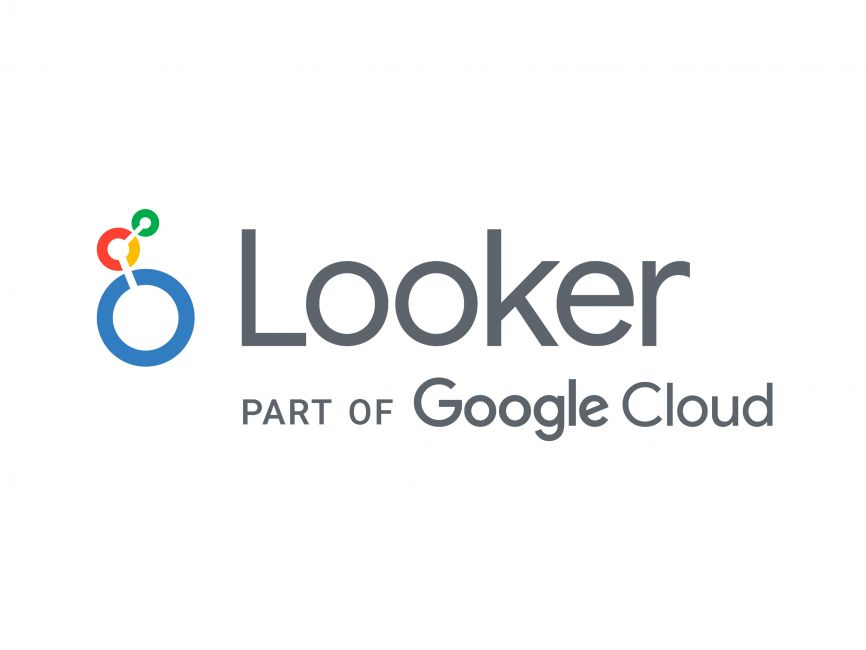

My collaborators and I are looking into how we can derive relationships between observations, documents, and documents with observations. Here we first debute the use of Venn diagrams with wordclouds, network analysis, and chord diagrams for deriving relationships between sensory attributes.


The dashboard is very well sized, especially for embedding. It has a variety of charts available. Easy to compile.
Very laborious to compile. Much like other Microsoft apps, it is not very responsive especially for embedding. Unintuitive sizing.